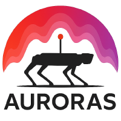

AURORAS – Advanced Autonomy for Robots Applied to the Primary Sector
- Full title
- Advanced Autonomy for Robots Applied to the Primary Sector
- Subprojects
- PERMAP – Perception and Mapping Systems for Transforming the Primary Sector (PID2024-161761OB-C21, Universidad de León)
PLANNAV – Advanced Task Planning and Navigation for Robotics in the Primary Sector (PID2024-161761OB-C22, Universidad Rey Juan Carlos)
- Funding
- MICIU/AEI/10.13039/501100011033 and ERDF/EU
- Duration
- 2025 – 2028
- PIs of PLANNAV
- Francisco Martín Rico, José Miguel Guerrero Hernández
- Links
- Project website · GitHub
About the project
AURORAS addresses challenges in biodiversity, climate change and sustainability by developing autonomous robotic systems for agriculture and livestock management. It focuses on perception, mapping and navigation in outdoor environments, promoting a more efficient and sustainable management of natural resources.
Two testbeds validate the results in unstructured environments: one for soil monitoring (moisture, nutrients, land quality) and one for livestock control and management, with multiple robots for grazing management, movement control and safe interaction with animals.
Subprojects
PERMAP · Universidad de LeónPerception and Mapping Systems for Transforming the Primary Sector
Perception and mapping systems that provide accurate data on soil, crops and livestock, and a guide of best practices for farmers and robot vendors.
PLANNAV · URJCAdvanced Task Planning and Navigation for Robotics in the Primary Sector
Navigation on rugged terrain with dynamically updated maps, localization beyond GPS, navigation under adverse conditions, and symbolic task planning for fleets of robots.
Publications and results
Journal
- 2026 Semi-Automated Generation of Realistic Simulation Environments from Geospatial Data for Agricultural Robot Navigation. S. Sánchez de la Fuente, L. Prieto-López, M.Á. González-Santamarta, V. Matellán-Olivera, A.M. Guerrero-Higueras. Computer Modeling in Engineering & Sciences, 147(2), 36 (2026) DOI
- 2026 Mobile Robot Localization and SLAM: A Critical Review of Sensors, Multi-Sensor Fusion, and Neural Representations. J.M. Guerrero Hernández, R. Pérez-Rodríguez, J.S. Cely, E. Aguado, F. Martín Rico. Robotics, 15(8), 142 (2026) DOI
- 2026 I Move Therefore I Learn: Experience-Based Traversability in Outdoor Robotics. M.A. Miguel, J. Beltrán, J.S. Cely, F. Martín, J.C. Manzanares, A. García. IEEE Access, 14 (2026) DOI
- 2026 One Workshop, Three Contexts: Assessing Advanced Software Robotics Training across General, Professional, and Academic Audiences. J. Betrán, R. Pérez-Rodríguez, E. Aguado, F.M. Moreno, J.M. Guerrero, J.D. Peña-Narvaez, J. Cely, M.A. Miguel, F. Martin. Robotics in Education (2026)
- 2025 Cognitive Architectures in Autonomous Robotics: A Systematic Review of Behavior Generation Approaches and Evaluation Strategies. M. Á. González-Santamarta, F. J. Rodríguez-Lera and V. Matellán-Olivera. IEEE Access. Volume 13, pages 191619–191644 (2025) DOI
Conferences
- 2026 Autonomous Soil Nutrient Mapping System: Integrating NIR Spectroscopy with a SCARA-Manipulator on a Summit-XL Rover. J. Fernández and L. Sánchez-González. 21st International Conference on Hybrid Artificial Intelligent Systems (HAIS 2026), June 18-19, Marbella, España. In: Lecture Notes in Computer Science, vol. 16596, Springer, 2027, pp. 79-86 DOI
- 2026 Comparative Evaluation of Computer Vision Models for Fruit Detection. M. George, L. Prieto-López, F.J. Rodríguez-Lera, L. Sánchez-González. 21st International Conference Soft Computing Models in Industrial and Environmental Applications (SOCO 2026), June 18-19, Marbella, España. In: Communications in Computer and Information Science, 3046 CCIS, Springer, 2027, pp. 3-13. DOI: 10.1007/978-3-032-29254-4_1
- 2026 Cybersecurity Audit of the Unitree Go2 Quadruped Robot. L. Prieto-López, S. Sánchez de la Fuente, F. Carrera-Martínez, F.J. Rodríguez-Lera, L. Sánchez-González. 19th International Conference Computational Intelligence in Security for Information Systems (CISIS 2026), June 18-19, Marbella, España. In: Communications in Computer and Information Science, 3013 CCIS, Springer, 2027, pp. 141-153. DOI: 10.1007/978-3-032-29251-3_12
- 2026 Vision-Guided Agricultural Robot for Crop Detection Using Edge Computing on Embedded Hardware. L. Prieto-López, I. Pascual, M. George, F.J. Rodríguez-Lera, L. Sánchez-González, 26th International Conference on Computational Science (ICCS 2026), Workshop Computer Vision in the Era of Large Neural Models (CV-LNM), June 29-July 1, Hamburgo, Alemania. In: Lecture Notes in Computer Science, 16787 LNCS, Springer, 2026, pp. 566-573 DOI
- 2025 How Do Humans Attempt to Initiate Interaction with a Robot? An Exploratory Study on Multimodal Engagement. Cristina Abad-Moya, Irene González Fernández, Alexis Gutiérrez-Fernández, Francisco J. Rodríguez-Lera, and Camino Fernández-Llamas. ACM/IEEE International Conference on Human-Robot Interaction (HRI 2026) Companion Proceedings. Conference paper. (Proceedings forthcoming)
- 2025 EasyNav Simple Stack: a minimum set of plugins for a reliable navigation. Francisco Martín Rico, Francisco Miguel Moreno Olivo, Juan Carlos Manzanares Serrano, José Miguel Guerrero Hernández, Juan Sebastián Cely Gutiérrez, Esther Aguado González and Francisco José Romero Ramírez. (2025). In: Proceedings International Workshop on Physical Agents (WAF). September 4-5, 2025, Cartagena (Spain)
- 2025 HERDS: A ROS 2-based animal detection and herding system. Luis Prieto López, Jean Chrysostome Mayoko Biong, Sergio Sánchez de la Fuente, Miguel A. González-Santamarta, Francisco J. Rodríguez-Lera, and Lidia Sánchez-González. (2025). In: Proceedings 8th Iberian Robotics Conference ROBOT. 12-14 November, 2025, Porto (Portugal)
Public Repositories
- 2025 Official GitHub Repository Link
- 2025 GitHub: Easy Navigation Link
- 2025 GitHub: GPS Navigation for Ignition Fortress and Gazebo Classic Link
- 2025 GitHub: Sheep Following System Link
- 2025 GitHub: SHEPHERD: Real-Time Detection of Sheep and Predators for Autonomous Herding Robots Link
- 2025 GitHub: Comparison of vision models for fruit and vegetable detection Link
Datasets
- 2025 Multi-Class Fruit and Vegetable Detection Dataset for Computer Vision Link
- 2025 Multi-class Fruit Detection Dataset for Real-Time Embedded Vision Systems Link
Demos/Experiments
- 2025 Demo 0: RIPS scenario, no attacks. Robocup's receptionists.
- 2025 Demo 1: In this experiment, we model a scenario wherein an unauthorized entity gains access to the data stream containing video footage captured by the robot's front-facing camera. RIPS detects the anomalous behavior and disables the front camera.
- 2025 Demo 2: RIPS detects an unauthorized use of the navigation service and forbids the navigation within a restricted zone.
- 2025 Demo 3: RIPS is monitoring the topics of the system and inspecting the messages. It uses a YARA rule to detect a signature of the malicious payload. To mitigate the attack, RIPS activates a System Mode to halt the robot.

Grant AURORAS: PERMAP PID2024-161761OB-C21 and PLANNAV PID2024-161761OB-C22, funded by MICIU/AEI/10.13039/501100011033 and by ERDF/EU.
All projects